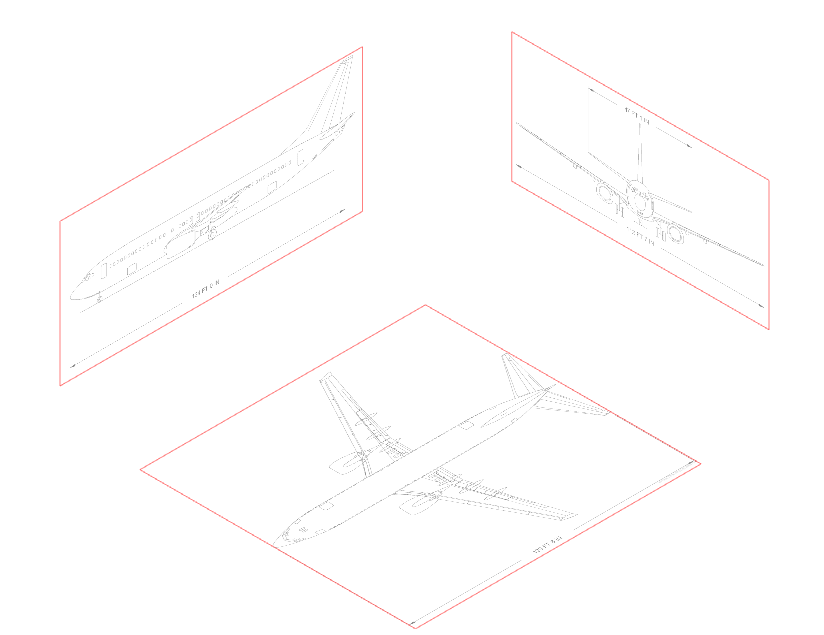
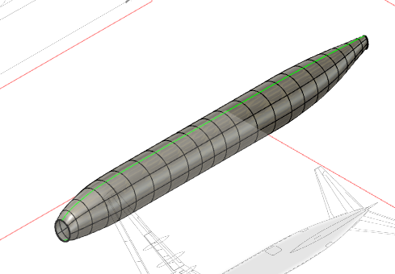

737 Project
During SDI(Summer Design Institute) at my school, I wanted to recreate an airplane and I was able to recreate a Boeing 737. In addition, I wanted to
learn a new software besides the usual Inventor. To create this project, I followed a tutorial I found on Youtube as I was new to the software.
It overall took 4 hours to create it following the tutorial. Here is the link to it:
Step 1: Creating Canvases
I first started with creating different canvases to show the different views. There was a top view, side view, and front view.
I needed these views as reference to start drawing the different parts of the fuselage. I was also able to center each drawing and calibrate it so
that it was to scale.

Step 2: Shaping the Fuselage
After creating the different canvases, I started working on the fuselage. I used a freeform cylinder to start. Then, using each view as a reference,
I slowly shaped the edges using each view as a reference. The middle portion was simple as it was just a cylinder but the top and bottom had to be shaped different
when the fuselage started to cave in. I used the edit form command in the freeform commands to shape the cylinder. I also learned a that to add squares to the freeform
while editing its form, you can press alt to add new panels to the freeform. After I finished shaping the freeform, I used the patch command to fix the holes at the front
and back of the fuselage.

Step 3: Nose and Back
Next, I created the nose and back of the fuselage. I was able to create the nose by lofting to a perpendicular sketch that would have the basic shape of the nose.
I got the sketch from tracing the side view of the nose. I was then able to loft the surface I had created from the patch command and the new sketch together and create a nose which
followed the views. I then did the same thing for the back of the fuselage but the back doesn't have a clear shape from the views so I estimated the distance and height of
the back of the fuselage.

Step 4:
After that, I was able to create the wing. I started it by first getting an image of the airfoil of the wing. I traced over that and then created an angled plane which
was the same angle as the wing. Then, I created the two rails on that plane which the airfoil was going to sweep onto by tracing the top view of the wing over. I then used the sweep command with
a path and a guide rail which was the two previous lines I had created. After that, I had to change the wingtip as it wasn't accurate to the top view. I did this by first creating a plane that went
to the end of the wing and used the split body command to create two different pieces. I removed the wing tip and did the same process as the nose and back to create the wingtip.
This was by creating a perpendicular plane, sketching the shape, and then lofting it using the end of the wing and the sketch I had just created. I then used the same overall process
for the horizontal stabilizers in the back but there wasn't any airfoil photos of the stabilizer on the back so I sketched my own airfoil for that. Then after that, it was the same process
as the wing just smaller.

Step 5:
The next things I worked on was creating the vertical stabilizer and detailing the fuselage. The vertical stabilizer was simple as it was just like the previous steps I had done before.
Like the horizontal stabilizer, I had to eyeball the airfoil for this part but I did reference the top view for the basic shape of the vertical stabilizer. It was the same process like the
others for having the airfoil sketch and sweeping that over a path and rail which led to the basic shape of the stabilizer. I then did the same like the wing for the tip of it as I created an
offset plane and used the split body command. This allowed me to remove the original tip and create one using the loft command. I then created the cockpit, windows, and doors of the plane. I did
this by creating sketches and using the split body to create different bodies which I could then change the color and make it seem like it wasn't part of the body. I then colored the wing
and the stabilizers.

Step 6:
After detailing, I worked on the engine of the plane. I first started by creating the outside of the engine by using the revolve command. I then worked inside of that to create the fan blades by lofting it to each other.
The two planes had the same shape but one was more rotated to make it look like the fan blade. I then used a circular pattern on that fan blade to create the whole thing. The next step of the engine was creating the airfoil
that was connected to the wing. I used the same process to create the wing as I had the airfoil on the bottom, create a perpendicular sketch with the guide rail and path, and finally swept those components. Then, since the airfoil started
in the middle of the engine, I used the engine as the split body profile and created two bodies. I removed the interesecting part and that made the airfoil for the engine. I then colored each part, having the engine cover the same color as the
fuselage and then I colored the blades darker.

Final Steps:
After creating the engine, I created the belly of the plane. I first started by splitting the body of the plane from the wing to create space for the belly. I projected the original airfoil sketch from the wing and sketched the basic shape of the belly.
I then used a 3D sketch to create the rails for the loft. I lofted that and was able to create the belly of the plane which connected to the wing. After creating that, I finished the left side of the plane and mirrored the wing,the engine, the horizontal stabilizer, and the belly
onto the other side and finished the plane.